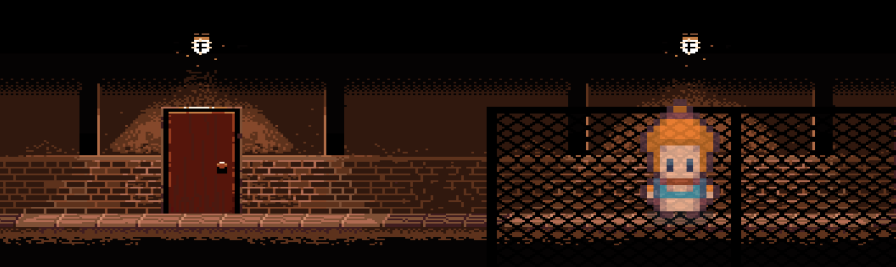

O CAMINHO DA DIREITA TE LEVOU A UM CORREDOR ESCURO. A CANÇÃO PAROU ASSIM QUE VOCÊ ENTROU. AO CAMINHAR EM DIREÇÃO A PORTA VERMELHA VOCÊ ENCONTROU UMA GAROTA PRESA.
- Garota
- O que você tá fazendo aqui? Nem pense em entrar naquela porta. Precisa de uma senha para abrir e qualquer deslize pode ativar o alarme.
- Você
- Esse maldito roubou um colar e eu preciso pegar de volta!
- Garota
- Ele guarda os pertences das vítimas em seu caixão. Atrás dessa porta vermelha você vai encontrá-lo.
- Você
- Vítimas? Caixão? O que o Alfredo é exatamente...?
- Garota
- O Alfredo é um vampiro! Ele me transformou em um. Falta pouco tempo para fazer efeito.
- Se eu fosse você sairia o mais rápido possível daqui. Essas grades não vão me segurar.
- Você
- MEU DEUS! :O Tem algo que eu possa fazer para te ajudar?
- Garota
- Não.
- Você
- ...
- Você
- Você disse que a porta precisa de uma senha... você sabe qual é?
- Garota
- Sim.
- Você
- ...Qual é?
- Garota
- Não tô afim de ajudar. Se vira. É melhor você não me irritar.